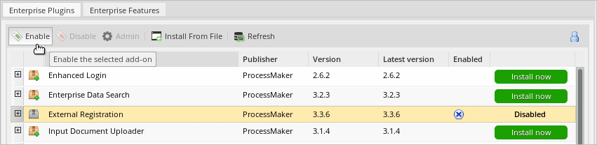
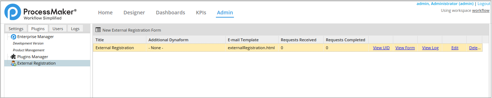
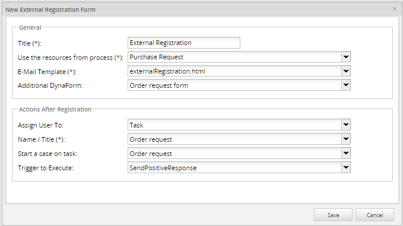
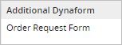
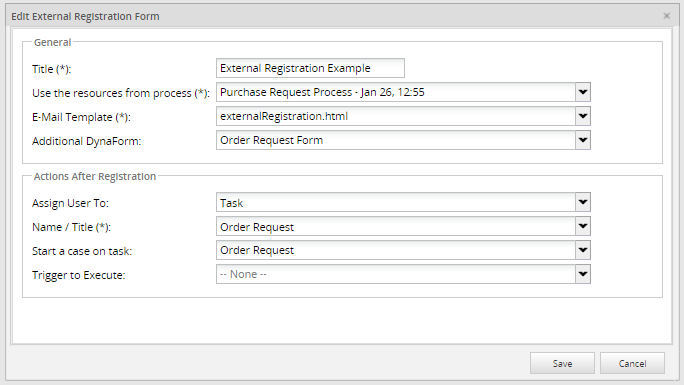

Plugin Version: 3.3.7 | Release Notes
Plugin Version: 3.3.7 | Release Notes
Overview
The External Registration plugin publishes a link to create users via an external registration form. The form that is generated, can be published anywhere, for example a web site. Only the Admin user, who has the PM_USERS permission in his/her role, can create this external registration form.
Requirements
ProcessMaker Compatibility
This plugin is fully compatible with the following ProcessMaker versions:
- v. 3.2.1 and later.
How the Plugin Works
Admin user side
-
The admin user creates an External Registration Form for end users to create a new ProcessMaker user account.
-
The Admin user sets up the behavior of the plugin by choosing the options in the form when an external registration is to be created.
-
When the External Registration Form is created, a link is available to be published on the web. This option is available by clicking on View Form.
End-user side
-
Include the respective link on the web page.
-
User must fill the form in order to create user's account
-
An email is sent to the user to activate the account.
-
When the account is activated, user can log on into ProcessMaker with the information sent via email.
Installation and Configuration
Refer to the following sections to install the External Registration plugin:
Install the Plugin
Log in with a user, such as "admin," who has the PM_SETUP_ADVANCE permission in their role, and then go to ADMIN > Plugins > Enterprise Manager. In the next graphic, do one of the following:
- Install the External Registration plugin by clicking on
 Install from File and uploading the plugin file.
Install from File and uploading the plugin file. - Click on the External Registration plugin's Install now or Upgrade now button in the list of available plugins.

For more information about plugin options, see Enterprise Manager Tool.
Enable the Plugin
After installing the plugin, make sure that the External Registration plugin is enabled  . If the plugin is not enabled, click the Enable button, as shown in the graphic below.
. If the plugin is not enabled, click the Enable button, as shown in the graphic below.

After installing and enabling the plugin, two new PM Functions are created which will allow ProcessMaker send an email to the user for activation. Those are the externalRegistrationSendEmail() and getExternalRegistrationLink().
Creating an External Registration Form
Follow these steps to create an External Registration form:
-
Go to ADMIN > Plugins > External Registration. The existing external registries display:

-
Click the New External Registration Form:

-
Fill out the New External Registration Form:

-
Enter the required information into the External Registration Form following these guidelines:
- Title: Enter the title of the External Registration Form. The title could be a brief description of the form. This field is required.
- Use the resources from process: Select a process from the drop-down menu. The process allows you to choose an additional Dynaform in a subsequent field of this form. This field is required.
- E-Mail Template: Choose the template which the email uses. The plugin is installed with a default template called externalRegistration.html. To add more email templates, check this link. This field is required.
- Additional DynaForm: A list of Dynaforms available displays according to the process selected beforehand. This is an additional option if you need to publish a Dynaform at the end of the form choosing a Dynaform name from this list.
Note: These Dynaforms must have a submit button in order to work properly.
- Assign User To: Select one of the following options to specify what occurs after the user has been registered into ProcessMaker.
-
- Task: Assign a user into a task from the Use the resources from process option above.
- Group: Assign user to a ProcessMaker group.
- Department: Assign user to a ProcessMaker department.
-
- Name/Title: Depending on the option selected on the previous field, the drop-down menu changes. This field is required.
- Start a Case on Task: When a user is created, a new case is created automatically. Choose the task of the process from where the new case starts.It is not necessary to choose the two options mentioned before.
- NEW_USER_UID: This variable is available if it's triggered by an External Registration Form and it also works as a trigger within the form.
- Trigger to Execute: Select the trigger to execute after the user is registered. There's a list of triggers created by the process. For instance, it is possible to create a trigger adding a notification indicating that the user has been created succesfully.
- Click Save and a confirmation message "Data Saved Correctly" displays.

- Click OK and the external registration form is created and it displays on the main list on the New External Registration Form screen:
- Title: The Title column displays the External Registration Form title.

- Additional Dynaform: The Additional Dynaform column displays that if an additional Dynaform was chosen, its name displays on this row.

- E-mail Template: The E-mail Template column displays the name of the template used to send emails.

- Requests Received: The Requests Received column displays the number of requests received when an account is created.

- Requests Completed: The Requests Completed column displays the number of requests completed.

- View UID: Click the View UID button to view the external registration form's UID (the Unique Identifier).

- View Form: Click the View Form button to view the form to be published. This is only a preview and it can be modified.

- View Log: Click the View Log button to display the number of users created by this external registration. Remember that one or more users can be created.

- Edit: Click the Edit button on the external registration if some changes are required.

- Delete: Click the Delete button to delete a external registration created.

General:
Actions After Registration

The New External Registration Form displays the following information:
Creating a User Account
To create a user account, the link to the External Registration Form must be published or sent via email If the link is not published and it needs to be revised, click View Form and it displays:

Fields to be filled:
- First Name: User's first name. This field is required.
- Last Name: Enter Last name of user. This field is required.
- E-mail: Enter E-mail address to where the link to activate the account will be sent. This field is required.
- Use E-mail as user name: Click Use E-mail as Username box to use E-mail as username. If this option is selected, User Name field is disabled.

- User Name: Enter the User Name used to login into ProcessMaker. The user name entered will be validated to check if it already exists. This field is required.

- Password: Enter a Password to authenticate the ProcessMaker User Name account. The required length of the password entered must be of at least 5 characters. According to the ProcessMaker password policies. This field is required.
- Confirm Password: Re-enter password to validate it. This field is required.

- Captcha Code: Type the characters that are displayed on the image. This prevents standard automated software from filling out a form. This field is required.
Click Submit to complete the registration form and a confirmation of Account Registration Completed message displays as follows:

Note 1:: User is created with PROCESSMAKER_OPERATOR role.
Note 2: If an additional form was selected, it will display after the user account registration confirmation.
Activating an Account
When the user registration is completed, an email is sent to the user's account. That user receives all required information to log on to ProcessMaker and how to activate the account.
Below is an example of a confirmation email:

Click the second link to activate the account and a confirmation window will display:

When the account is activated, click Log in by selecting on the first link in the email sent.
Log On with the New User's Account
The user logs on to ProcessMaker using the information sent by email and is redirected to the Inbox folder.
ProcessMaker Functions
The following ProcessMaker functions are available after the plugin is installed.
externalRegistrationSendEmail()
This function creates a request and sends an email to the user that contains the confirmation link to activate the account.
It is possible to create the request within the process and send it to the user as an invitation to participate.
externalRegistrationSendEmail($erUid, $email, $data = array())
Parameters
- $erUid: External registration form UID.
- $email: user email where the email request will be sent.
- $data: Dynaform variables to be sent in the template. This parameter is optional.
getExternalRegistrationLink()
This function returns a link from the form. This may be used in different ways, such as to send the link by email or include it in a form.
getExternalRegistrationLink($erUid)
Parameters
- $erUid: External registration form UID.